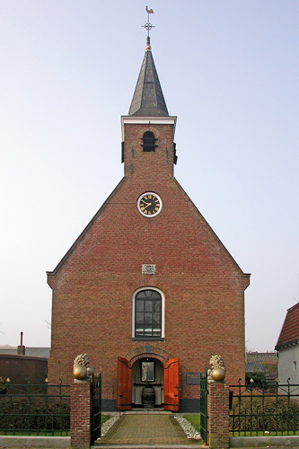

Onze kerk

Een nostalgische werkplek
Het is een bijzondere plek en dat geeft direct een leuke sfeer. Het pand aan de Herenwal is in 1775 gebouwd. Destijds voor de Nederlands Hervormde Gemeente in Heerenveen
Met authentieke elementen
Bij de restauratie hebben we authentieke elementen bewaard. Er zijn nog een aantal kerkbanken, natuurlijk is de preekstoel behouden en het historische Van Dam-orgel uit 1866.
Wil je in onze kerk kijken?
Neem dan contact met ons op. Wil je weten hoe je ons vindt? Gebruik zonodig de routeplanner na het bekijken van ons adres.